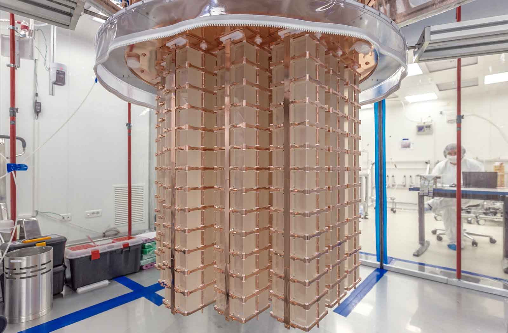

<!DOCTYPE HTML>
<!--
	Landed by HTML5 UP
	html5up.net | @n33co
	Free for personal and commercial use under the CCA 3.0 license (html5up.net/license)
-->
<html>
	<head>
		<title>CUORE | Surya Dutta</title>
		<meta charset="utf-8" />
		<meta name="viewport" content="width=device-width, initial-scale=1" />
		<!--[if lte IE 8]><script src="assets/js/ie/html5shiv.js"></script><![endif]-->
		<link rel="stylesheet" href="assets/css/main.css" />
		<!--[if lte IE 9]><link rel="stylesheet" href="assets/css/ie9.css" /><![endif]-->
		<!--[if lte IE 8]><link rel="stylesheet" href="assets/css/ie8.css" /><![endif]-->
		<link rel="shortcut icon" href="images/favicon.ico" type="image/x-icon">
		<link rel="icon" href="images/favicon.ico" type="image/x-icon">
	</head>
	<body>
		<div id="page-wrapper">
			<!-- Header -->
			<header id="header">
				<h1 id="logo"><a href="http://suryadutta.me">Surya Dutta</a></h1>
				<nav id="nav">
					<ul>
						<li><a href="http://suryadutta.me">Home</a></li>
						<li><a href="research.html">Research</a>
							<ul>
								<li><a href="cuore.html">CUORE</a></li>
								<li><a href="darkmatter.html">Dark Matter Detection</a></li>
							</ul>
						</li>
						<li><a href="leadership.html">Leadership</a>
							<ul>
								<li><a href="yura.html">YURA</a></li>
								<li><a href="ysm.html">Yale Scientific Magazine</a></li>
								<li><a href="priorleadershiproles.html">Prior Leadership Roles</a></li>
							</ul>
						</li>
						<li><a href="design.html">Design</a>
						</li>
						<li><a href="contactme.html">Contact Me</a></li>
						<li><a href="assets/Resume-SuryaDutta.pdf" class="button special">Resume</a></li>
					</ul>
				</nav>
			</header>
			<!-- Main -->
				<div id="main" class="wrapper style1">
					<div class="container">
						<header class="major">
							<h2>Cryogenic Underground Observatory for Rare Events</h2>
							<h4>Experimental Physics Research Assistant</br>February 2016 - Present</h4>
						</header>

						<!-- Content -->
							<section id="content">
								<div class="box alt">
									<div class="row 50% uniform">
										<div class="4u  6u(xsmall)"><span class="image fit"></span></div>
										<div class="4u  6u$(xsmall)"><span class="image fit"></span></div>
										<div class="4u$ 6u(xsmall)"><span class="image fit"></span></div>
									</div>
								</div>

								<p>The Cryogenic Underground Observatory for Rare Events (CUORE) is a ton-scale neutrinoless double-beta decay experiment under construction at the Laboratori Nazionali del Gran Sasso (LNGS). The experiment is comprised of 988 TeO<sub>2</sub> bolometric crystals arranged into 19 towers and operated at a temperature of 10 mK.</p>
								<h3>Student Researcher</h3>
								<h4>Maruyama Lab, Yale University</h4>
								<p>Project: <b>Monte Carlo Photon/Phonon Simulations for CUORE Upgrade with Particle Identification (CUPID)</b><br/>Collaboration with the <b>Winslow Lab CUORE Group @ MIT</b>
									<ul>
										<li>Conducting research and development for next-generation of ton-scale cryogenic detectors</li>
										<li>Expanding current thermalization models for CUORE by improving mathematical models and design parameters</li>
										<li>Exploring optimality conditions and discrimination power to obtain stronger thermal signals and lower backgrounds for neutrino and neutrinoless double-beta decay events</li>
										<li>Developing and analyzing Monte Carlo simulations using the Geant4 toolkit and the ROOT data analysis framework (based on C++)</li>
									</ul>
								</p>
								<h3>On-Site Research Assistant <i>(May - Aug 2016)</i></h3>
								<h4>Laboratorio Nazionali del Gran Sasso, Assergi, Italy</h4>
								<ul>
									<li>Conducted critical tasks on-site prior to commissioning and data acquisition, such as installing calibration hardware, diagnosing vacuum and cryogenic systems, assisting clean room operations, and setting up security networks</li>
									<li>Developed slow monitoring systems to accurately and securely monitor the cryostat using responsive LabVIEW virtual instruments, video streams, and a custom-built web interface using the Angular, Bootstrap, and MongoDB frameworks</li>
								</ul>
							</section>

					</div>
				</div>

			<!-- Footer -->
				<footer id="footer">
					<ul class="icons">
						<li><a href="mailto:suryabrata.dutta@yale.edu" class="icon alt fa-envelope" target="_blank"><span class="label">Email</span></a></li>
						<li><a href="https://www.linkedin.com/in/suryadutta" class="icon alt fa-linkedin" target="_blank"><span class="label">LinkedIn</span></a></li>
						<li><a href="https://www.facebook.com/mrdutta7" class="icon alt fa-facebook" target="_blank"><span class="label">Facebook</span></a></li>
					</ul>
					<ul class="copyright">
						<li>&copy; Surya Dutta 2016</li><li>Design: <a href="http://html5up.net" target="_blank">HTML5 UP</a></li>
					</ul>
				</footer>

		</div>

		<!-- Scripts -->
			<script src="assets/js/jquery.min.js"></script>
			<script src="assets/js/jquery.scrolly.min.js"></script>
			<script src="assets/js/jquery.dropotron.min.js"></script>
			<script src="assets/js/jquery.scrollex.min.js"></script>
			<script src="assets/js/skel.min.js"></script>
			<script src="assets/js/util.js"></script>
			<!--[if lte IE 8]><script src="assets/js/ie/respond.min.js"></script><![endif]-->
			<script src="assets/js/main.js"></script>
			<script>
  (function(i,s,o,g,r,a,m){i['GoogleAnalyticsObject']=r;i[r]=i[r]||function(){
  (i[r].q=i[r].q||[]).push(arguments)},i[r].l=1*new Date();a=s.createElement(o),
  m=s.getElementsByTagName(o)[0];a.async=1;a.src=g;m.parentNode.insertBefore(a,m)
  })(window,document,'script','//www.google-analytics.com/analytics.js','ga');

  ga('create', 'UA-65383421-1', 'auto');
  ga('send', 'pageview');

</script>

	</body>
</html>
